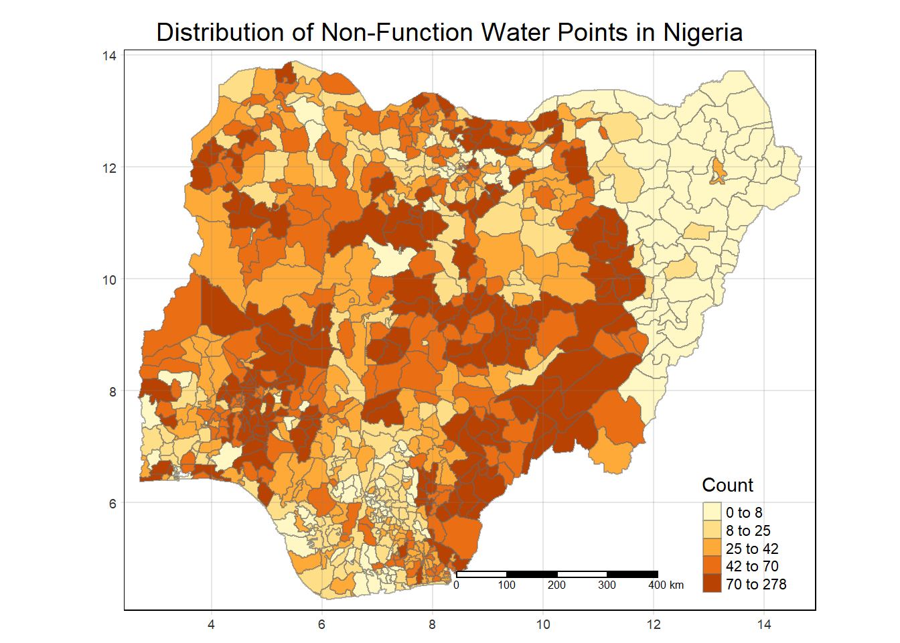

pacman::p_load(sf, spdep, tmap, tidyverse, stringr)Take-home Exercise 1: Geospatial Analytics for Social Good
Background
In Singapore, people are used to access clean water any where and any time. The convenience of getting clean water makes some people forget how precious clean water is, can how difficult it is for people living in other countries to use clean water.
Nigeria is one of the countries still facing severe water crisis, and about one third of the children there don’t have enough water to meet their daily needs.
In this take-home exercise, we are going to analyze the water point related data in Nigeria to reveal the spatial patterns of Not Functional water points.
Problem Statement
- Apply appropriate global and local measures of spatial association techniques on Nigeria data to study the spatial patterns of Not Functional water points.
Getting Started
Data sources
- Aspatial Data
A set of a spatial data containing the water point related information is downloaded from Water Point Data Exchange (WPdx) website.
The original data set contains the data from 17 countries, and only the subset of Nigeria is used for the analysis in this exercise.
- Geospatial Data
Nigeria Level-2 Administrative Boundary polygon features GIS data downloaded from geoBoundaries will be used in this exercise.
Loading R Packages
First of all, let’s load the required R packages into R:
sf: importing, managing and processing geospatial data.
spdep: computing spatial weights and spatially lagged variables.
tmap: plotting Thematic Maps
tidyverse: importing, wrangling and visualizing data. It consists of a family of R packages, including readr, readxl, tidyr, dplyr and ggplot2.
Importing Data
Aspatial Data
Let’s import the aspatial data containing the water point information.
wp <- read_csv("Data/Water_Point_Data_Exchange-Plus_WPdx.csv")The data set contains 406,566 rows and 70 columns.
table(wp$`#clean_country_name`)
#| eval: false
length(table(wp$`#clean_country_name`))The aspatial data set contains data from 17 countries, and Nigeria consists of 95,008 rows.
Now, let’s get the subset of Nigeria.
wp <- subset(wp, `#clean_country_name` == "Nigeria")
#| eval: false
list(wp)The subset now contains only data for Nigeria, and it has 95,008 rows and 70 columns.
As our focus is to study the non-functional water points, let’s create a new column to indicate if the water points are functional or non-functional.
# Extract the first word from #status column
wp$status_n <- word(wp$`#status`, 1)
#| eval: false
unique(wp$status_n)Now let’s save the data set with the selected columns.
wp <- wp %>% select(c(`#lat_deg`,
`#lon_deg`,
`#clean_adm2`,
status_n,
`#water_source_category`,
`#water_tech_category`,
`#install_year`,
`#management_clean`,
`#subjective_quality`,
water_point_population,
local_population_1km,
crucialness_score
))write_csv(wp, "Data/Water_Point_Nigeria.csv")After reducing the data file size, let’s import the data again for analysis.
wp <- read_csv("Data/Water_Point_Nigeria.csv")The data set now contains 32,101 rows and the selected 11 columns.
Let’s take a look at some data in the wp data frame to check if the data is imported correctly.
list(wp)We could observe that some string columns contain NA’s. Let’s recode the NA’s into Unknown.
wp <- wp %>% mutate_at(vars(`#water_source_category`,
`#water_tech_category`,
`#management_clean`,
`#subjective_quality`),
~replace_na(., "Unknown"))unique(wp$`#water_source_category`)
#| eval: false
unique(wp$`#water_tech_category`)
#| eval: false
unique(wp$`#management_clean`)
#| eval: false
unique(wp$`#subjective_quality`)All the NA’s have been recoded into Unknown.
We also could notice that latitude and longitude columns contains decimal values. Hence, we could assume they are in WGS 84 Geographic Coordinate System.
wp_sf <- st_as_sf(wp,
coords = c("#lon_deg", "#lat_deg"),
crs = 4326)Let’s take a look at the new simple feature data frame.
glimpse(wp_sf)We have a new column, geometry, added into the simple feature data frame. The original latitude and longitude columns have been dropped.
Geospatial Data
Next, let’s import the geospatial data into R as a polygon feature data.
nga <- st_read(dsn = "Data/geoBoundaries-NGA-ADM2-all",
layer = "geoBoundaries-NGA-ADM2")We can see that this geospatial data is a multipolygon features object. It contains 774 multipolygon features and 5 fields. It is in WGS 84 coordinates system, and the bounding box provides the x and y extends of the data.
Extracting Information about Non-Functional Water Points
There are a few things we could analyze to understand more about the non-functional water points. Some of the ideas are:
Number of non-functional water points in the regions
The source of the water at the non-functional water points. We could make use of the variable #water_source_category which contains the following categories:
- Well
- Piped Water
- Spring
The technology used at the non-functional water points. We could make use of the variable #water_tech_category which contains the following categories:
- Mechanized Pump
- Hand Pump
- Tapstand
- Unknown
Extracting Non-Functional Water Points
Let’s extract the data of non-functional water points.
wp_nonfunc <- wp_sf %>% filter(status_n == "Non-functional")Extracting Non-Functional Water Points from Different Water Sources
Let’s check what are the different water sources for non-functional water points.
unique(wp_nonfunc$`#water_source_category`)Next, extract the data of water points using well as the water source.
wp_s_well <- wp_sf %>% filter(status_n == "Non-functional" & `#water_source_category` == "Well")Next, extract the data of water points using Piped Water as the water source.
wp_s_pw <- wp_sf %>% filter(status_n == "Non-functional" & `#water_source_category` == "Piped Water")Next, extract the data of water points using Spring as the water source.
wp_s_spring <- wp_sf %>% filter(status_n == "Non-functional" & `#water_source_category` == "Spring")Extracting Water Points using Different Technologies
Let’s check what are the different technologies used at non-functional water points.
unique(wp_nonfunc$`#water_tech_category`)Next, extract the data of water points using Mechanized Pump.
wp_t_mp <- wp_sf %>% filter(status_n == "Non-functional" & `#water_tech_category` == "Mechanized Pump")Next, extract the data of water points using Hand Pump.
wp_t_hp <- wp_sf %>% filter(status_n == "Non-functional" & `#water_tech_category` == "Hand Pump")Next, extract the data of water points using Tapstand.
wp_t_ts <- wp_sf %>% filter(status_n == "Non-functional" & `#water_tech_category` == "Tapstand")Next, extract the data of water points using Unknown technology.
wp_t_unknown <- wp_sf %>% filter(status_n == "Non-functional" & `#water_tech_category` == "Unknown")Perform Point-in-Polygon Count
Let’s add the count of the water points into the geospatial data.
nga_wp <- nga %>%
mutate(total_wpt = lengths(
st_intersects(nga, wp_sf)
)) %>%
mutate(wpt_nonfunc = lengths(
st_intersects(nga, wp_nonfunc)
)) %>%
mutate(wpt_nonfunc_s_well = lengths(
st_intersects(nga, wp_s_well)
)) %>%
mutate(wpt_nonfunc_s_pipe = lengths(
st_intersects(nga, wp_s_pw)
)) %>%
mutate(wpt_nonfunc_s_spring = lengths(
st_intersects(nga, wp_s_spring)
)) %>%
mutate(wpt_nonfunc_t_mechanical = lengths(
st_intersects(nga, wp_t_mp)
)) %>%
mutate(wpt_nonfunc_t_hand = lengths(
st_intersects(nga,wp_t_hp)
)) %>%
mutate(wpt_nonfunc_t_tap = lengths(
st_intersects(nga, wp_t_ts)
)) %>%
mutate(wpt_nonfunc_t_unknown = lengths(
st_intersects(nga, wp_t_unknown)
))Let’s also calculate the percentage of non-functional water points, as well as the percentages of different water sources and technologies among non-functional water points.
nga_wp <- nga_wp %>%
mutate(wpt_nonfunc_pct = wpt_nonfunc / total_wpt) %>%
mutate(wpt_nonfunc_s_well_pct = wpt_nonfunc_s_well / wpt_nonfunc) %>%
mutate(wpt_nonfunc_s_pipe_pct = wpt_nonfunc_s_pipe / wpt_nonfunc) %>%
mutate(wpt_nonfunc_s_spring_pct = wpt_nonfunc_s_spring / wpt_nonfunc) %>%
mutate(wpt_nonfunc_t_mechanical_pct = wpt_nonfunc_t_mechanical / wpt_nonfunc) %>%
mutate(wpt_nonfunc_t_hand_pct = wpt_nonfunc_t_hand / wpt_nonfunc) %>%
mutate(wpt_nonfunc_t_tap_pct = wpt_nonfunc_t_tap / wpt_nonfunc) %>%
mutate(wpt_nonfunc_t_unknown_pct = wpt_nonfunc_t_unknown / wpt_nonfunc)Saving the Analytical Data Table
Now we have prepared the analytical data table. Let’s save the simple feature data table into rds format.
write_rds(nga_wp, "Data/nga_wp.rds")Visualizing the Spatial Distribution of Water Points
Let’s first import the analytical data back into R.
nga_wp <- read_rds("Data/nga_wp.rds")Let’s take a look at the distribution of the non-functional water points in Nigeria.
tm_shape(nga_wp) +
tm_fill("wpt_nonfunc",
style = "quantile",
title = "Count") +
tm_layout(main.title = "Distribution of Non-Function Water Points in Nigeria",
main.title.position = "center",
main.title.size = 1.2,
legend.height = 0.45,
legend.width = 0.35,
frame = TRUE) +
tm_borders(alpha = 0.5) +
tm_scale_bar() +
tm_grid(alpha = 0.2)
References
- UNICEF. (2022, March 22). Nearly one third of Nigerian children do not have enough water to meet their daily needs - UNICEF. https://www.unicef.org/nigeria/press-releases/nearly-one-third-nigerian-children-do-not-have-enough-water-meet-their-daily-needs